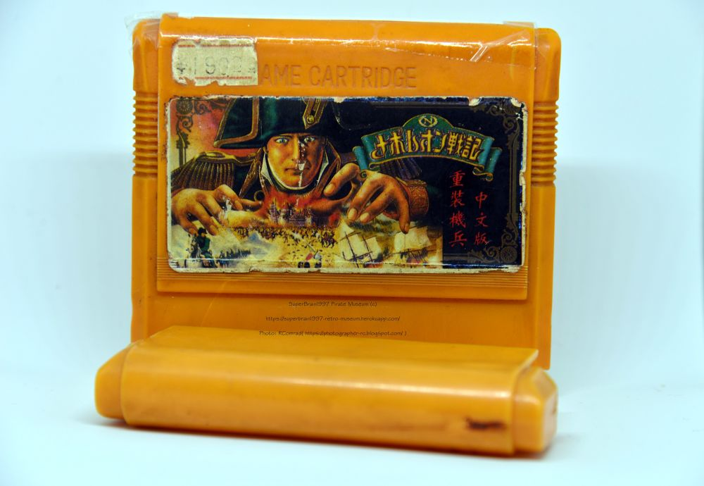

Интересный экземпляр из Китая
Дата написания статьи: 19 февраля 2018.Ссылка на пост ВК (оригинал): https://vk.com/wall-87396586_2189
Адаптировано для музея: AlexSRMD
Здравствуйте дорогие наши читатели. Для вас снова пишет второй админ - Нейрбов, я заметил что вам понравилась моя прошлая статья про картриджи Александра Чудова, посему решил продолжить писать статьи про разного рода пиратские чудеса картриджей для Dendy, поскольку сам являюсь их коллекционером и собираю их с 2012 года. И сегодняшнюю статью я хотел бы посвятить одному картриджу и одной из игр, которую отыскал совершенно случайно, но при этом то что этот образец крайне интересен, я узнал только в момент когда стал с ним детально разбираться. Обо всем по порядку:
(Фото 1)Итак, я купил картридж с игрой, ранее мне неизвестной, название которой обозначало "Наполеоновские Войны". Я подумал что это интересная игра, небось очередная стратегия на японском языке с которой будет интересно разобраться. Я даже не подозревал что это изначально был оригинал на Famicom, если честно, но в момент включения я увидел нечто другое, титульный экран совершенно по иероглифам не похож на то название, которое заявлено на картинке, а в геймплее игры нет никакого Наполеона и намека на войны. Первый админ подтвердил что это другая совершенно игра, не имеющая к Наполеону никакого отношения.
В этот момент я подумал, ну подумаешь, перепутали корпус и плату с игрой ну с кем не бывает, типичное явление на пиратчине. Однако все оказалось гораздо более интересно.
(Фото 2) В тот момент как дошло до перевода иероглифов и пошли первые подозрения, потому что их перевод обозначал нечто вроде "Тяжелые солдаты и машины: Китайская версия". И вот тут то я начал соображать и до меня дошло, что иероглифы написанные справа на обложке и на титульном экране идентичны. Стало быть получается что никакой ошибки тут нет, пираты выпустили эту игру с одной обложкой, но другим совершенно названием. Вероятно на стадии производства была перепутана. Но при этом корпус соответствует плате и ошибки тут по логике нету.
И еще один интересный момент. На обложке мы с вами видели "Китайская версия".(Фото 3) Титульный экран же внутри действительно отличается от официального релиза как раз таки тем что переписан на китайский язык и тем что год выпуска игры изменен с 1991 на 1994. То есть получается надпись про китайский перевод это не шутка? Несколько позже я сравню оригинальный релиз и этот и вынесу свой вердикт, об этом напишу в следующем своем посте. Если действительно игра переведена на китайский язык то это большущая уважуха самим пиратам, хотя бы потому что перевести RPG игру на свой родной язык стоит больших трудов, к тому же это не какая то простенькая игра а ля Battle City.
Получается по логике так, что вероятно существует и игра про Наполеона с вероятным китайским переводом игры? А может эти две игры вообще далеко не единственные переводы китайцев и тема с переводом игры на национальный язык также были и у самих китайцев? Картридж кстати говоря с батарейкой, так что возможность сохранять прогресс вероятно есть.
(Фото 4)От оригинального образца обложка почти не отличается, кроме очередных отрезаний надписей на самой обложке.
Интересный попался образец, как только более детально изучу его, напишу вероятную вторую часть этой статьи.
Сама же игра внутри это Metal Max, как выяснилось.
Спасибо за внимание!
SuperBrain1997
Галерея
